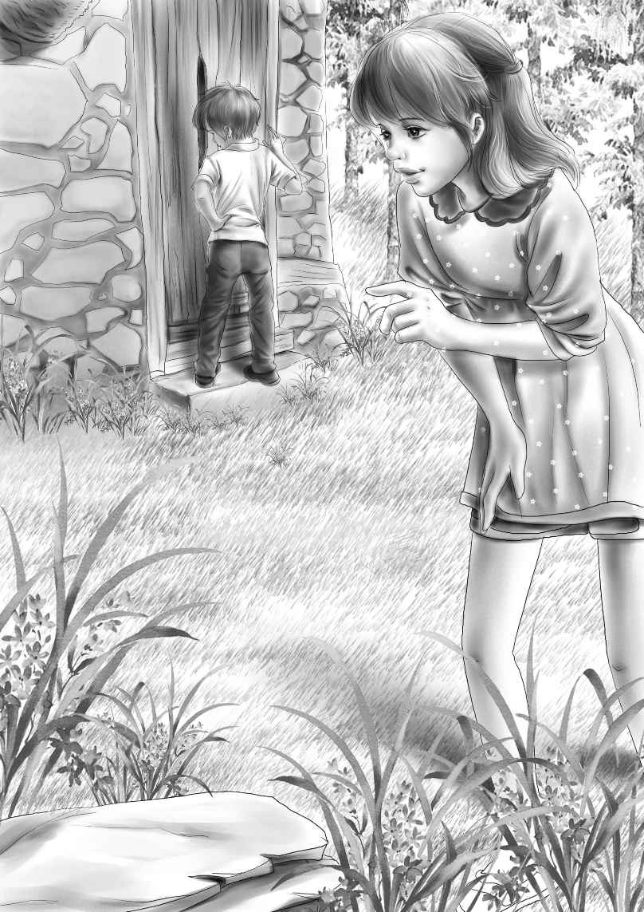

Chapter 3 Grandfather Takes Over
“摩尔斯先生为什么非得等到车要开了，才想着叫我们啊？”亨利问。
“我想起来了，这是当地人说话的习惯。”爷爷解释道，“他们说话行事一向如此，不紧不慢的。你们要慢慢适应。”
“我觉得刚才应该掉头回去的。”亨利还是不放心。
“别担心啦！”爷爷说，“咱们去看看房子，就会知道究竟有什么问题了。这里的人是世界上最善良，也是最乐于助人的，不信就等着瞧，只要你们开口，他们会飞快地过来帮忙的。”
维莉看了看杰西，两人会心地一笑。她们喜欢看到爷爷这么开心的样子。爷爷不停地左顾右盼，打量着眼前的小村庄。
“快看！”他说，“那是豆子农场！”
“豆子农场？”班尼惊讶地问，“农场里种着豆子么？”
“不是，是因为这家农场的主人姓豆，他们家有两个儿子。”奥登先生解释道，“我还记得，其中一个儿子跟我的年纪差不多大，以前整天调皮捣蛋。他长得很帅气，可惜总是闯祸。”奥登先生忍不住仰头大笑，“我还记得，那时候简非常喜欢他，真的非常喜欢，总帮着他说话。”
“他后来怎么样了？”班尼问道，“长大后成坏人了吗？”
“我也不知道，班尼。说来话长，一次他因为枪走火而闯下了大祸，第二天就不见了，之后谁也没见过他。简很伤心，要不是因为这件事，简很可能就嫁给他了。”
“他逃跑了吗？”亨利问。
“应该是这样。我们听说他后来逃到了海边，在船上找到了活儿，跑遍了世界各地。不管怎样，现在谁也不知道他在哪里，说不定已经去世了——这很有可能。”
“那简姑婆会非常难过的。”维莉说。
奥登先生看了看这个善解人意的小孙女，说：“是啊，简肯定会非常难过。只是没有人知道，他的那支枪究竟从何而来。”
“他用枪伤人了吗？”班尼问道。
“那倒没有，他只是为了吓唬别人朝大树开了几枪而已。奇怪的是，这几枪居然引起了一场森林大火，火势大到差点烧到他家的房子，幸亏火被邻居及时扑灭了。之后的第二天早晨，他就不见了。”
“他叫什么名字？”杰西问。
“他的名字？”爷爷愣住了，“我不记得了。事情已经过去了好久，当时我也只是个小孩子。”
“他家的房子很漂亮！”亨利说。
“是啊，不过没有咱家农场上的房子漂亮，我们的房子是1750年盖的。屋顶上有四根大烟囱，我还记得，前排的烟囱上刻着这个日期。快看！快看！那儿就是我们的老房子！”
奥登先生的兴奋劲儿也感染了四个孩子。大家望向山顶，只见那儿矗立着一座白色的大房子，旁边长着两棵高大的榆树。房子后面是一个红色的大谷仓，谷仓背后是广袤的农田和树林。
“我没看出这房子有什么问题啊？”杰西说，“我觉得它看起来很漂亮呢！只是需要粉刷一下而已。”
“别忘了，屋顶会漏雨哦！”班尼提醒道。
“咱们进去看看再说吧，”亨利说，“既然摩尔斯先生说我们不会喜欢这房子，那说明房子肯定有问题。”
“我看到烟囱上刻的1750年啦！”班尼突然大声叫了起来，“是用白色油漆刻上去的。”
亨利驾驶着旅行车，又拐了个弯，将车停在房子的后门边。大家下了车，伫立在门外，仔细打量着眼前的房子。接着，亨利用大钥匙打开了后门。
“还好，钥匙和锁都没问题。”亨利推开了后门。

“我先进去，”奥登先生说，“你们几个跟在后面。这屋子已经很久没人住了。”的确，房子看上去阴森森的。
他们进门后首先看到的是一间食品储藏室，接着是一个老式厨房。
“快看！”杰西叫了起来，“好大的壁炉！”
“大到我都可以躺在里面了！”班尼兴奋地说。
“别瞎说！”杰西说，“你们再看这儿，两边各有一个砖砌的烤炉呢！”说完她打开了烤炉的门。
“太酷了！”班尼嚷道，“这肯定就是人们烤面包的地方。”
穿过大厨房，大家进入了起居室，只见不算太破旧的地毯上布满厚厚的灰尘，桌椅上也积满了尘埃。
他们转向左边，来到了长长的客厅，客厅的顶头就是前门，正对前门的是会客厅和卧室。一家人快速穿过这些房间——反正以后有的是时间仔细参观。
“楼上应该有四间卧室吧？”杰西说。
“咱们赶紧上楼去看看！”班尼说，“说不定问题就藏在楼上呐！”
“反正楼下我没发现有什么不妥，”亨利说，“除了到处都很脏，灰尘很大以外。要知道每间房都有壁炉，不脏才怪！”
“楼上也是一样的。”爷爷解释道，“以前我们都是靠壁炉取暖，不像现在有暖气。”
一家人来到楼上，果然发现了四间卧室，只是没有洗手间。
“爷爷，咱们没法在这儿住，”杰西——这个尽职的小管家说，“房子里太脏了。”
“当然！我不是说过，咱们要去住汽车旅馆吗？也许我们能找人把这儿打扫干净。”
“我们自己来打扫吧！”班尼提议道。
“噢，这活儿只有身强力壮的清洁女工才能胜任——也许男人会更合适？”奥登先生说着，看了看周围，一副若有所思的样子。
“快看，后门那儿有人，”班尼说，“我看到他的车了。”
大家走下楼来，发现一个高个子的年轻人正从车里出来。
“你是摩尔斯先生的儿子，专门来帮我们修屋顶的吗？”班尼问。
“答对了，小家伙，”年轻人说，“叫我西姆吧！我的全名是西米恩·摩尔斯。”
“哈，太酷啦！”班尼兴奋地叫道，“等山姆来了，咱们这里就有一个山姆，一个西姆了。”
“谁是山姆？”西姆问。
“山姆是我姐姐的随从。”奥登先生答道，“山姆很好相处，他和妻子会帮我姐姐料理好这个农场。现在，年轻人，我希望你能告诉我实情——这座宅子究竟有什么古怪？”
西姆闻言不禁紧张起来，他不安地站在那儿。
“实情就是——我什么也不知道。”
“什么都不知道？那你们为什么会觉得这房子有问题呢？”
“这个我也不清楚。”西姆答道。
爷爷在厨房的椅子上坐了下来，他探过身子，“来吧，西姆，就坐在这儿。我很想知道宅子里究竟发生了什么。你父亲说这房子有问题，你也这么想，是吗？你们为什么会有如此想法？我以前住在这里的时候，还从来没发现屋子里有什么神秘之处呐！”
西姆凝视着爷爷，半晌才开口道：“这屋子的古怪之处就在于，没人能在这里住得长——你们家从这儿搬走了，后来的主人也都搬走了。”
“你们怎么会这么想？”爷爷问道。
“也许是出于愚蠢的迷信吧！”西姆说。
“没关系，甭管愚不愚蠢，我都很想知道个究竟。”
“好吧！”西姆说，“我想您还记得豆先生一家吧？就是以前住在您隔壁的那家？”
“当然记得。”
西姆继续问道：“那你还记得他们家的大儿子吗？他不知从哪儿找到了一把枪。”
“记得，”爷爷说，“不过我忘了他的名字。”
“他叫安德鲁。”西姆说。
“没错，就叫安德鲁！我们当时都叫他安迪，可是他爸爸不喜欢这个名字。噢，我怎么把这些都给忘了？那么，后来发生了什么事情？”
“安德鲁桀骜不驯，经常惹祸，他捡来的枪导致了一场大火灾。大家把火扑灭后，安德鲁再也没有出现过。后来，他的弟弟便继承了家里的农场。”
“可是，这一切跟这座房子有什么关系呢？再说，事情已经过去好久了。”
西姆看了看奥登先生，“要知道从那时起，这宅子就不太平了，而且越来越邪门。有传言说，安德鲁的枪就是从这座房子里拿走的，似乎有居心不良的人藏在这里，把枪给了他……”
“那给他枪的坏蛋究竟是谁？”
“我也不知道，事情太久远了。”
“安德鲁拿的是怎样的枪？”亨利问道。
“你算问对人了！那把枪现在就在我爸的家里。枪非常非常古老，应该是很久以前独立战争时期用过的。”
“我想看看那把枪。”奥登先生说。
“随时都行！”西姆说，“只管找我爸要。”
奥登先生看着亨利和杰西，“看来枪的背后有秘密，我们一定要解开这个秘密。”
“哦，天啊！”班尼大声说，“事情越来越精彩啦！只要爷爷出马，肯定有好戏看。”
“这我相信。”西姆冲着班尼笑道。
“对了，西姆，”奥登先生说，“这房子没什么安全隐患吧？你能修好屋顶，把屋子打扫干净吗？”
“当然能！”西姆说，“其实我觉得房子本身没什么大问题。”说完他皱了皱眉头。
“可是你之前说这房子有些邪门！”奥登先生不禁提高了嗓门。
“那只是大家的传言和迷信，说这里风水不太好罢了。房子本身是好房子。我考虑要在地下室支起一根大柱子，让地板更坚固一些。再把屋顶和窗户修好，刷上油漆，这样你们就可以安心入住了。”
“很高兴能有你这样的朋友！”奥登先生说，“认识你是我们的幸运。你能找到帮手今天就开工吗？”
“今天？我不知道今天行不行。”
“有困难吗？”爷爷问道，“还是你在忙其他事？”
“噢，倒是没什么要紧的事，只不过我的拖拉机需要修理一下——这个留着以后做也行。”
“那么，能找到帮忙修房子的人吗？”
“我猜邻居们都乐意帮忙。他们听说奥登小姐要回来住，高兴得很呐，都想着说不定这样能改改老宅子的风水呢！”
“你是说，邻居们已经知道这事儿了？”爷爷问。
“当然喽，大家都是昨天晚上知道的——整个村子都传遍啦。”
“哈，消息传得真快！”爷爷不禁笑道，“我记得在我小的时候也是这样。那么，能麻烦你去找些帮手来吗？我还不认识邻居们。好了，现在就去吧！我先给你一些钱，买油漆、木料和支撑地下室用的木头。”他算了算数目，将钱递给了西姆。
“怎么办呢？现在你们暂时还不能住在这儿。”西姆看着四个孩子说。
“哦，没关系，我们应该能在村里找到汽车旅馆。”
“没错，有旅馆。你们沿着这条路一直往前走，差不多走四英里，就能看到一家不错的汽车旅馆，旅馆房间里有地毯和电视，很方便。”
“对了，西姆，”杰西问道，“您能帮我们在房子里装上洗手间吗？”
“你想把洗手间装在哪里？”西姆问。
“楼上一个，楼下一个，”杰西说，“客厅这么大，很容易就能划出装洗手间的位置。”
“嗯，就按杰西说的办吧，”爷爷说，“这附近有人装过洗手间吗？”
西姆挠了挠头：“我倒是一直想装来着，不过要花不少钱，就放弃了。”
“好了，你去忙你的吧！”奥登先生说，“不管找多少帮手都成，最重要的是，我希望能尽快完工，因为简已经迫不及待地想搬进来了。”
“看来她跟以前不一样了，”西姆说，“我爸说她以前是个慢条斯理的人，您倒是风风火火的。”
“没错，”奥登先生说，“简的变化确实很大。跟你父亲说，我们姐弟俩现在都变成急性子啦。”
“没问题，”西姆说，“我会把一切都告诉他的。”
正当奥登先生和西姆说话的工夫，维莉和班尼已经开始四处打探了。
维莉在长满荒草的院子里找到了一条通向前门的小路，同时，她还发现了几块被太阳烤得热乎乎的大平石板。
班尼跑到马厩旁，将脑袋从门缝里探进去，只见马厩里空空荡荡，黑黢黢一片。一盏旧马灯悬挂在破旧的马具上，四周鸦雀无声。“真恐怖！”班尼自言自语道。
这时，他才突然意识到，距离吃早饭已经过了很长时间，于是赶紧跑回爷爷身边，叫道：“我饿啦！”
“你又饿了？”爷爷问道，“你忘了才吃过早饭吗？”
“我也饿了，爷爷，”维莉说，“与其在汽车旅馆里吃午饭，咱们不如就在这儿野餐吧！瞧这花园多漂亮啊！”
“你说这个花园漂亮？”西姆说，“等把野草割掉后，你再看吧，那才叫漂亮呐！”
“瞧，前门旁边有几块大石板，”维莉说，“我们去搬把椅子出来让爷爷坐，然后美美地来一次野餐！”
对维莉的建议，爷爷从来都是言听计从。“好，”他说，“那咱们现在就去旅馆，买些三明治来，再把暖瓶装满牛奶。西姆，汽车旅馆里有三明治卖吗？”
“应该有，”西姆说，“不过我妻子应该很乐意为你们做些鸡肉三明治，她做的三明治很好吃。”
“太酷了！”班尼兴奋地说。
“她还会做鸡蛋三明治。”西姆补充道。
“那我们现在就去吧！”班尼等不及了。
“我先回去告诉她一声，”西姆说，“再叫几个邻居来帮忙修理房子。”
“哈！”爷爷欢呼了一声，眼睛闪闪发光。
“哈！”班尼也同时欢呼道。这一刻，他像极了爷爷。西姆看着他们俩，明白他们有多迫切地想将房子快点修好。他喃喃自语道：“既然大家如此期待，那我要赶紧将房子修理好！”